Supplemental Figure draft
Renee Matthews
2026-06-25
Last updated: 2026-06-25
Checks: 7 0
Knit directory: DXR_continue/
This reproducible R Markdown analysis was created with workflowr (version 1.7.2). The Checks tab describes the reproducibility checks that were applied when the results were created. The Past versions tab lists the development history.
Great! Since the R Markdown file has been committed to the Git repository, you know the exact version of the code that produced these results.
Great job! The global environment was empty. Objects defined in the global environment can affect the analysis in your R Markdown file in unknown ways. For reproduciblity it’s best to always run the code in an empty environment.
The command set.seed(20250701) was run prior to running
the code in the R Markdown file. Setting a seed ensures that any results
that rely on randomness, e.g. subsampling or permutations, are
reproducible.
Great job! Recording the operating system, R version, and package versions is critical for reproducibility.
Nice! There were no cached chunks for this analysis, so you can be confident that you successfully produced the results during this run.
Great job! Using relative paths to the files within your workflowr project makes it easier to run your code on other machines.
Great! You are using Git for version control. Tracking code development and connecting the code version to the results is critical for reproducibility.
The results in this page were generated with repository version 1a7a8fd. See the Past versions tab to see a history of the changes made to the R Markdown and HTML files.
Note that you need to be careful to ensure that all relevant files for
the analysis have been committed to Git prior to generating the results
(you can use wflow_publish or
wflow_git_commit). workflowr only checks the R Markdown
file, but you know if there are other scripts or data files that it
depends on. Below is the status of the Git repository when the results
were generated:
Ignored files:
Ignored: .Rhistory
Ignored: .Rproj.user/
Ignored: analysis/figure/
Ignored: data/Bed_exports/
Ignored: data/Bed_exportsH3K27ac_summit_gr_ext200.bed
Ignored: data/Cormotif_data/
Ignored: data/DER_data/
Ignored: data/H3K27ac_LTR10E_integrant_anno.RDS
Ignored: data/H3K27ac_MER61E_integrant_anno.RDS
Ignored: data/MER61intermediatemarking_protein.RDS
Ignored: data/Other_paper_data/
Ignored: data/RDS_files/
Ignored: data/TE_annotation/
Ignored: data/alignment_summary.txt
Ignored: data/all_peak_final_dataframe.txt
Ignored: data/cell_line_info_.tsv
Ignored: data/full_p53_canonical.RDS
Ignored: data/full_summary_QC_metrics.txt
Ignored: data/lookup_table_andstuff.txt
Ignored: data/motif_lists/
Ignored: data/number_frag_peaks_summary.txt
Ignored: data/p53halfsite_TE_ids.RDS
Untracked files:
Untracked: H3K27ac_all_regions_test.bed
Untracked: H3K27ac_consensus_clusters_test.bed
Untracked: MER61C_ERV1_LTR.fa
Untracked: analysis/GREAT_H3K27ac.Rmd
Untracked: analysis/H3K27ac_ChromHMM_FC.Rmd
Untracked: analysis/H3K27ac_KZFP_motifs.Rmd
Untracked: analysis/H3K27ac_TE_investigation_200bp.Rmd
Untracked: analysis/H3K27me3_TE_investigation.Rmd
Untracked: analysis/H3K36me3_TE_investigation.Rmd
Untracked: analysis/Top2a_Top2b_expression.Rmd
Untracked: analysis/drill_down_KZFPs.Rmd
Untracked: analysis/maps_and_plots.Rmd
Untracked: analysis/proteomics.Rmd
Untracked: code/For_john.R
Untracked: code/score_phylop.py
Untracked: other_analysis/
Unstaged changes:
Modified: analysis/H3K27ac_TEtype.Rmd
Modified: analysis/H3K27ac_cisRE.Rmd
Modified: analysis/H3K27me3_TE_overlap_extend.Rmd
Modified: analysis/LTR10E_build.Rmd
Modified: analysis/MER61E_build.Rmd
Modified: analysis/chromHMM_2.Rmd
Modified: code/corMotifcustom.R
Note that any generated files, e.g. HTML, png, CSS, etc., are not included in this status report because it is ok for generated content to have uncommitted changes.
These are the previous versions of the repository in which changes were
made to the R Markdown (analysis/supp_fig.Rmd) and HTML
(docs/supp_fig.html) files. If you’ve configured a remote
Git repository (see ?wflow_git_remote), click on the
hyperlinks in the table below to view the files as they were in that
past version.
| File | Version | Author | Date | Message |
|---|---|---|---|---|
| Rmd | 1a7a8fd | reneeisnowhere | 2026-06-25 | first commit |
library(tidyverse)
library(GenomicRanges)
library(plyranges)
library(genomation)
library(readr)
library(rtracklayer)
library(stringr)
library(ggrepel)
library(DT)
library(ComplexHeatmap)
library(circlize)
library(ggalluvial)
library(AnnotationDbi)
library(org.Hs.eg.db)
library(edgeR)
library(RColorBrewer)
library(ggVennDiagram)
library(ChIPseeker)Data import:
sampleinfo <- read_delim("data/sample_info.tsv", delim = "\t")
peak_ct <- read_delim("data/peaks/peaks_cts_FINAL.txt", delim = "\t")
H3K27ac_peaks <- read_delim("data/peaks/H3K27ac_FINAl_results.tsv",delim = "\t")
trimmed_multiqc_fastqc <- read_delim("C:/Users/renee/Other_projects_data/DXR_data/Steven_bed_Files/data/multiqc_data_trim/multiqc_fastqc.txt",
delim = "\t", escape_double = FALSE,
trim_ws = TRUE)
fastq_fragments <- read_delim("C:/Users/renee/Other_projects_data/DXR_data/fastq_backup_stats.tsv",delim = "\t", escape_double = FALSE,
trim_ws = TRUE)
frag_count_total_no_multi <- read_delim("C:/Users/renee/Other_projects_data/DXR_data/Steven_bed_Files/data/bam_no_multi/frag_count_total_no_multi.tsv",
delim = "\t", escape_double = FALSE,
trim_ws = TRUE)
fragment_count_totals_final <- read_delim("C:/Users/renee/Other_projects_data/DXR_data/Steven_bed_Files/data/bam_final/fragment_count_totals_final.tsv",
delim = "\t", escape_double = FALSE,
trim_ws = TRUE)
# creating the fragmenfile
H3K27acfrag_summary_file <- fastq_fragments %>%
mutate(file=str_remove(file, "_R[12]\\.fastq\\.gz$")) %>%
distinct() %>%
left_join(sampleinfo,by=c("file"="Library ID")) %>%
dplyr::filter(Treatment != "5FU" & Histone_Mark =="H3K27ac") %>%
dplyr::select(file, Histone_Mark:Timepoint,num_seqs) %>%
left_join(frag_count_total_no_multi, by=c("file"="sample")) %>%
left_join(fragment_count_totals_final, by=c("file"="sample")) %>%
dplyr::rename("all_fragments"=num_seqs,
"mapped_fragments"= fragment_count_total.x,
"unique_noM_dedup"=fragment_count_total.y)
H3K27ac_toplist <- readRDS( "data/DER_data/H3K27ac_toplist.RDS")
peakAnnoList_H3K27ac <- readRDS("data/motif_lists/H3K27ac_annotated_peaks.RDS")
H3K27ac_lookup <- imap_dfr(peakAnnoList_H3K27ac[1:3], ~
tibble(Peakid = .x@anno$Peakid, cluster = .y))## Fit limma model using code as it is found in the original cormotif code. It has
## only been modified to add names to the matrix of t values, as well as the
## limma fits
limmafit.default <- function(exprs,groupid,compid) {
limmafits <- list()
compnum <- nrow(compid)
genenum <- nrow(exprs)
limmat <- matrix(0,genenum,compnum)
limmas2 <- rep(0,compnum)
limmadf <- rep(0,compnum)
limmav0 <- rep(0,compnum)
limmag1num <- rep(0,compnum)
limmag2num <- rep(0,compnum)
rownames(limmat) <- rownames(exprs)
colnames(limmat) <- rownames(compid)
names(limmas2) <- rownames(compid)
names(limmadf) <- rownames(compid)
names(limmav0) <- rownames(compid)
names(limmag1num) <- rownames(compid)
names(limmag2num) <- rownames(compid)
for(i in 1:compnum) {
selid1 <- which(groupid == compid[i,1])
selid2 <- which(groupid == compid[i,2])
eset <- new("ExpressionSet", exprs=cbind(exprs[,selid1],exprs[,selid2]))
g1num <- length(selid1)
g2num <- length(selid2)
designmat <- cbind(base=rep(1,(g1num+g2num)), delta=c(rep(0,g1num),rep(1,g2num)))
fit <- lmFit(eset,designmat)
fit <- eBayes(fit)
limmat[,i] <- fit$t[,2]
limmas2[i] <- fit$s2.prior
limmadf[i] <- fit$df.prior
limmav0[i] <- fit$var.prior[2]
limmag1num[i] <- g1num
limmag2num[i] <- g2num
limmafits[[i]] <- fit
# log odds
# w<-sqrt(1+fit$var.prior[2]/(1/g1num+1/g2num))
# log(0.99)+dt(fit$t[1,2],g1num+g2num-2+fit$df.prior,log=TRUE)-log(0.01)-dt(fit$t[1,2]/w, g1num+g2num-2+fit$df.prior, log=TRUE)+log(w)
}
names(limmafits) <- rownames(compid)
limmacompnum<-nrow(compid)
result<-list(t = limmat,
v0 = limmav0,
df0 = limmadf,
s20 = limmas2,
g1num = limmag1num,
g2num = limmag2num,
compnum = limmacompnum,
fits = limmafits)
}
limmafit.counts <-
function (exprs, groupid, compid, norm.factor.method = "TMM", voom.normalize.method = "none")
{
limmafits <- list()
compnum <- nrow(compid)
genenum <- nrow(exprs)
limmat <- matrix(NA,genenum,compnum)
limmas2 <- rep(0,compnum)
limmadf <- rep(0,compnum)
limmav0 <- rep(0,compnum)
limmag1num <- rep(0,compnum)
limmag2num <- rep(0,compnum)
rownames(limmat) <- rownames(exprs)
colnames(limmat) <- rownames(compid)
names(limmas2) <- rownames(compid)
names(limmadf) <- rownames(compid)
names(limmav0) <- rownames(compid)
names(limmag1num) <- rownames(compid)
names(limmag2num) <- rownames(compid)
for (i in 1:compnum) {
message(paste("Running limma for comparision",i,"/",compnum))
selid1 <- which(groupid == compid[i, 1])
selid2 <- which(groupid == compid[i, 2])
# make a new count data frame
counts <- cbind(exprs[, selid1], exprs[, selid2])
# remove NAs
not.nas <- which(apply(counts, 1, function(x) !any(is.na(x))) == TRUE)
# runn voom/limma
d <- DGEList(counts[not.nas,])
d <- calcNormFactors(d, method = norm.factor.method)
g1num <- length(selid1)
g2num <- length(selid2)
designmat <- cbind(base = rep(1, (g1num + g2num)), delta = c(rep(0,
g1num), rep(1, g2num)))
y <- voom(d, designmat, normalize.method = voom.normalize.method)
fit <- lmFit(y, designmat)
fit <- eBayes(fit)
limmafits[[i]] <- fit
limmat[not.nas, i] <- fit$t[, 2]
limmas2[i] <- fit$s2.prior
limmadf[i] <- fit$df.prior
limmav0[i] <- fit$var.prior[2]
limmag1num[i] <- g1num
limmag2num[i] <- g2num
}
limmacompnum <- nrow(compid)
names(limmafits) <- rownames(compid)
result <- list(t = limmat,
v0 = limmav0,
df0 = limmadf,
s20 = limmas2,
g1num = limmag1num,
g2num = limmag2num,
compnum = limmacompnum,
fits = limmafits)
}
limmafit.list <-
function (fitlist, cmp.idx=2)
{
compnum <- length(fitlist)
genes <- c()
for (i in 1:compnum) genes <- unique(c(genes, rownames(fitlist[[i]])))
genenum <- length(genes)
limmat <- matrix(NA,genenum,compnum)
limmas2 <- rep(0,compnum)
limmadf <- rep(0,compnum)
limmav0 <- rep(0,compnum)
limmag1num <- rep(0,compnum)
limmag2num <- rep(0,compnum)
rownames(limmat) <- genes
colnames(limmat) <- names(fitlist)
names(limmas2) <- names(fitlist)
names(limmadf) <- names(fitlist)
names(limmav0) <- names(fitlist)
names(limmag1num) <- names(fitlist)
names(limmag2num) <- names(fitlist)
for (i in 1:compnum) {
this.t <- fitlist[[i]]$t[,cmp.idx]
limmat[names(this.t),i] <- this.t
limmas2[i] <- fitlist[[i]]$s2.prior
limmadf[i] <- fitlist[[i]]$df.prior
limmav0[i] <- fitlist[[i]]$var.prior[cmp.idx]
limmag1num[i] <- sum(fitlist[[i]]$design[,cmp.idx]==0)
limmag2num[i] <- sum(fitlist[[i]]$design[,cmp.idx]==1)
}
limmacompnum <- compnum
result <- list(t = limmat,
v0 = limmav0,
df0 = limmadf,
s20 = limmas2,
g1num = limmag1num,
g2num = limmag2num,
compnum = limmacompnum,
fits = limmafits)
}
## Rank genes based on statistics
generank<-function(x) {
xcol<-ncol(x)
xrow<-nrow(x)
result<-matrix(0,xrow,xcol)
z<-(1:1:xrow)
for(i in 1:xcol) {
y<-sort(x[,i],decreasing=TRUE,na.last=TRUE)
result[,i]<-match(x[,i],y)
result[,i]<-order(result[,i])
}
result
}
## Log-likelihood for moderated t under H0
modt.f0.loglike<-function(x,df) {
a<-dt(x, df, log=TRUE)
result<-as.vector(a)
flag<-which(is.na(result)==TRUE)
result[flag]<-0
result
}
## Log-likelihood for moderated t under H1
## param=c(df,g1num,g2num,v0)
modt.f1.loglike<-function(x,param) {
df<-param[1]
g1num<-param[2]
g2num<-param[3]
v0<-param[4]
w<-sqrt(1+v0/(1/g1num+1/g2num))
dt(x/w, df, log=TRUE)-log(w)
a<-dt(x/w, df, log=TRUE)-log(w)
result<-as.vector(a)
flag<-which(is.na(result)==TRUE)
result[flag]<-0
result
}
## Correlation Motif Fit
cmfit.X<-function(x, type, K=1, tol=1e-3, max.iter=100) {
## initialize
xrow <- nrow(x)
xcol <- ncol(x)
loglike0 <- list()
loglike1 <- list()
p <- rep(1, K)/K
q <- matrix(runif(K * xcol), K, xcol)
q[1, ] <- rep(0.01, xcol)
for (i in 1:xcol) {
f0 <- type[[i]][[1]]
f0param <- type[[i]][[2]]
f1 <- type[[i]][[3]]
f1param <- type[[i]][[4]]
loglike0[[i]] <- f0(x[, i], f0param)
loglike1[[i]] <- f1(x[, i], f1param)
}
condlike <- list()
for (i in 1:xcol) {
condlike[[i]] <- matrix(0, xrow, K)
}
loglike.old <- -1e+10
for (i.iter in 1:max.iter) {
if ((i.iter%%50) == 0) {
print(paste("We have run the first ", i.iter, " iterations for K=",
K, sep = ""))
}
err <- tol + 1
clustlike <- matrix(0, xrow, K)
#templike <- matrix(0, xrow, 2)
templike1 <- rep(0, xrow)
templike2 <- rep(0, xrow)
for (j in 1:K) {
for (i in 1:xcol) {
templike1 <- log(q[j, i]) + loglike1[[i]]
templike2 <- log(1 - q[j, i]) + loglike0[[i]]
tempmax <- Rfast::Pmax(templike1, templike2)
templike1 <- exp(templike1 - tempmax)
templike2 <- exp(templike2 - tempmax)
tempsum <- templike1 + templike2
clustlike[, j] <- clustlike[, j] + tempmax +
log(tempsum)
condlike[[i]][, j] <- templike1/tempsum
}
clustlike[, j] <- clustlike[, j] + log(p[j])
}
#tempmax <- apply(clustlike, 1, max)
tempmax <- Rfast::rowMaxs(clustlike, value=TRUE)
for (j in 1:K) {
clustlike[, j] <- exp(clustlike[, j] - tempmax)
}
#tempsum <- apply(clustlike, 1, sum)
tempsum <- Rfast::rowsums(clustlike)
for (j in 1:K) {
clustlike[, j] <- clustlike[, j]/tempsum
}
#p.new <- (apply(clustlike, 2, sum) + 1)/(xrow + K)
p.new <- (Rfast::colsums(clustlike) + 1)/(xrow + K)
q.new <- matrix(0, K, xcol)
for (j in 1:K) {
clustpsum <- sum(clustlike[, j])
for (i in 1:xcol) {
q.new[j, i] <- (sum(clustlike[, j] * condlike[[i]][,
j]) + 1)/(clustpsum + 2)
}
}
err.p <- max(abs(p.new - p)/p)
err.q <- max(abs(q.new - q)/q)
err <- max(err.p, err.q)
loglike.new <- (sum(tempmax + log(tempsum)) + sum(log(p.new)) +
sum(log(q.new) + log(1 - q.new)))/xrow
p <- p.new
q <- q.new
loglike.old <- loglike.new
if (err < tol) {
break
}
}
clustlike <- matrix(0, xrow, K)
for (j in 1:K) {
for (i in 1:xcol) {
templike1 <- log(q[j, i]) + loglike1[[i]]
templike2 <- log(1 - q[j, i]) + loglike0[[i]]
tempmax <- Rfast::Pmax(templike1, templike2)
templike1 <- exp(templike1 - tempmax)
templike2 <- exp(templike2 - tempmax)
tempsum <- templike1 + templike2
clustlike[, j] <- clustlike[, j] + tempmax + log(tempsum)
condlike[[i]][, j] <- templike1/tempsum
}
clustlike[, j] <- clustlike[, j] + log(p[j])
}
#tempmax <- apply(clustlike, 1, max)
tempmax <- Rfast::rowMaxs(clustlike, value=TRUE)
for (j in 1:K) {
clustlike[, j] <- exp(clustlike[, j] - tempmax)
}
#tempsum <- apply(clustlike, 1, sum)
tempsum <- Rfast::rowsums(clustlike)
for (j in 1:K) {
clustlike[, j] <- clustlike[, j]/tempsum
}
p.post <- matrix(0, xrow, xcol)
for (j in 1:K) {
for (i in 1:xcol) {
p.post[, i] <- p.post[, i] + clustlike[, j] * condlike[[i]][,
j]
}
}
loglike.old <- loglike.old - (sum(log(p)) + sum(log(q) +
log(1 - q)))/xrow
loglike.old <- loglike.old * xrow
result <- list(p.post = p.post, motif.prior = p, motif.q = q,
loglike = loglike.old, clustlike=clustlike, condlike=condlike)
}
## Fit using (0,0,...,0) and (1,1,...,1)
cmfitall<-function(x, type, tol=1e-3, max.iter=100) {
## initialize
xrow<-nrow(x)
xcol<-ncol(x)
loglike0<-list()
loglike1<-list()
p<-0.01
## compute loglikelihood
L0<-matrix(0,xrow,1)
L1<-matrix(0,xrow,1)
for(i in 1:xcol) {
f0<-type[[i]][[1]]
f0param<-type[[i]][[2]]
f1<-type[[i]][[3]]
f1param<-type[[i]][[4]]
loglike0[[i]]<-f0(x[,i],f0param)
loglike1[[i]]<-f1(x[,i],f1param)
L0<-L0+loglike0[[i]]
L1<-L1+loglike1[[i]]
}
## EM algorithm to get MLE of p and q
loglike.old <- -1e10
for(i.iter in 1:max.iter) {
if((i.iter%%50) == 0) {
print(paste("We have run the first ", i.iter, " iterations",sep=""))
}
err<-tol+1
## compute posterior cluster membership
clustlike<-matrix(0,xrow,2)
clustlike[,1]<-log(1-p)+L0
clustlike[,2]<-log(p)+L1
tempmax<-apply(clustlike,1,max)
for(j in 1:2) {
clustlike[,j]<-exp(clustlike[,j]-tempmax)
}
tempsum<-apply(clustlike,1,sum)
## update motif occurrence rate
for(j in 1:2) {
clustlike[,j]<-clustlike[,j]/tempsum
}
p.new<-(sum(clustlike[,2])+1)/(xrow+2)
## evaluate convergence
err<-abs(p.new-p)/p
## evaluate whether the log.likelihood increases
loglike.new<-(sum(tempmax+log(tempsum))+log(p.new)+log(1-p.new))/xrow
loglike.old<-loglike.new
p<-p.new
if(err<tol) {
break;
}
}
## compute posterior p
clustlike<-matrix(0,xrow,2)
clustlike[,1]<-log(1-p)+L0
clustlike[,2]<-log(p)+L1
tempmax<-apply(clustlike,1,max)
for(j in 1:2) {
clustlike[,j]<-exp(clustlike[,j]-tempmax)
}
tempsum<-apply(clustlike,1,sum)
for(j in 1:2) {
clustlike[,j]<-clustlike[,j]/tempsum
}
p.post<-matrix(0,xrow,xcol)
for(i in 1:xcol) {
p.post[,i]<-clustlike[,2]
}
## return
#calculate back loglikelihood
loglike.old<-loglike.old-(log(p)+log(1-p))/xrow
loglike.old<-loglike.old*xrow
result<-list(p.post=p.post, motif.prior=p, loglike=loglike.old)
}
## Fit each dataset separately
cmfitsep<-function(x, type, tol=1e-3, max.iter=100) {
## initialize
xrow<-nrow(x)
xcol<-ncol(x)
loglike0<-list()
loglike1<-list()
p<-0.01*rep(1,xcol)
loglike.final<-rep(0,xcol)
## compute loglikelihood
for(i in 1:xcol) {
f0<-type[[i]][[1]]
f0param<-type[[i]][[2]]
f1<-type[[i]][[3]]
f1param<-type[[i]][[4]]
loglike0[[i]]<-f0(x[,i],f0param)
loglike1[[i]]<-f1(x[,i],f1param)
}
p.post<-matrix(0,xrow,xcol)
## EM algorithm to get MLE of p
for(coli in 1:xcol) {
loglike.old <- -1e10
for(i.iter in 1:max.iter) {
if((i.iter%%50) == 0) {
print(paste("We have run the first ", i.iter, " iterations",sep=""))
}
err<-tol+1
## compute posterior cluster membership
clustlike<-matrix(0,xrow,2)
clustlike[,1]<-log(1-p[coli])+loglike0[[coli]]
clustlike[,2]<-log(p[coli])+loglike1[[coli]]
tempmax<-apply(clustlike,1,max)
for(j in 1:2) {
clustlike[,j]<-exp(clustlike[,j]-tempmax)
}
tempsum<-apply(clustlike,1,sum)
## evaluate whether the log.likelihood increases
loglike.new<-sum(tempmax+log(tempsum))/xrow
## update motif occurrence rate
for(j in 1:2) {
clustlike[,j]<-clustlike[,j]/tempsum
}
p.new<-(sum(clustlike[,2]))/(xrow)
## evaluate convergence
err<-abs(p.new-p[coli])/p[coli]
loglike.old<-loglike.new
p[coli]<-p.new
if(err<tol) {
break;
}
}
## compute posterior p
clustlike<-matrix(0,xrow,2)
clustlike[,1]<-log(1-p[coli])+loglike0[[coli]]
clustlike[,2]<-log(p[coli])+loglike1[[coli]]
tempmax<-apply(clustlike,1,max)
for(j in 1:2) {
clustlike[,j]<-exp(clustlike[,j]-tempmax)
}
tempsum<-apply(clustlike,1,sum)
for(j in 1:2) {
clustlike[,j]<-clustlike[,j]/tempsum
}
p.post[,coli]<-clustlike[,2]
loglike.final[coli]<-loglike.old
}
## return
loglike.final<-loglike.final*xrow
result<-list(p.post=p.post, motif.prior=p, loglike=loglike.final)
}
## Fit the full model
cmfitfull<-function(x, type, tol=1e-3, max.iter=100) {
## initialize
xrow<-nrow(x)
xcol<-ncol(x)
loglike0<-list()
loglike1<-list()
K<-2^xcol
p<-rep(1,K)/K
pattern<-rep(0,xcol)
patid<-matrix(0,K,xcol)
## compute loglikelihood
for(i in 1:xcol) {
f0<-type[[i]][[1]]
f0param<-type[[i]][[2]]
f1<-type[[i]][[3]]
f1param<-type[[i]][[4]]
loglike0[[i]]<-f0(x[,i],f0param)
loglike1[[i]]<-f1(x[,i],f1param)
}
L<-matrix(0,xrow,K)
for(i in 1:K)
{
patid[i,]<-pattern
for(j in 1:xcol) {
if(pattern[j] < 0.5) {
L[,i]<-L[,i]+loglike0[[j]]
} else {
L[,i]<-L[,i]+loglike1[[j]]
}
}
if(i < K) {
pattern[xcol]<-pattern[xcol]+1
j<-xcol
while(pattern[j] > 1) {
pattern[j]<-0
j<-j-1
pattern[j]<-pattern[j]+1
}
}
}
## EM algorithm to get MLE of p and q
loglike.old <- -1e10
for(i.iter in 1:max.iter) {
if((i.iter%%50) == 0) {
print(paste("We have run the first ", i.iter, " iterations",sep=""))
}
err<-tol+1
## compute posterior cluster membership
clustlike<-matrix(0,xrow,K)
for(j in 1:K) {
clustlike[,j]<-log(p[j])+L[,j]
}
tempmax<-apply(clustlike,1,max)
for(j in 1:K) {
clustlike[,j]<-exp(clustlike[,j]-tempmax)
}
tempsum<-apply(clustlike,1,sum)
## update motif occurrence rate
for(j in 1:K) {
clustlike[,j]<-clustlike[,j]/tempsum
}
p.new<-(apply(clustlike,2,sum)+1)/(xrow+K)
## evaluate convergence
err<-max(abs(p.new-p)/p)
## evaluate whether the log.likelihood increases
loglike.new<-(sum(tempmax+log(tempsum))+sum(log(p.new)))/xrow
loglike.old<-loglike.new
p<-p.new
if(err<tol) {
break;
}
}
## compute posterior p
clustlike<-matrix(0,xrow,K)
for(j in 1:K) {
clustlike[,j]<-log(p[j])+L[,j]
}
tempmax<-apply(clustlike,1,max)
for(j in 1:K) {
clustlike[,j]<-exp(clustlike[,j]-tempmax)
}
tempsum<-apply(clustlike,1,sum)
for(j in 1:K) {
clustlike[,j]<-clustlike[,j]/tempsum
}
p.post<-matrix(0,xrow,xcol)
for(j in 1:K) {
for(i in 1:xcol) {
if(patid[j,i] > 0.5) {
p.post[,i]<-p.post[,i]+clustlike[,j]
}
}
}
## return
#calculate back loglikelihood
loglike.old<-loglike.old-sum(log(p))/xrow
loglike.old<-loglike.old*xrow
result<-list(p.post=p.post, motif.prior=p, loglike=loglike.old)
}
generatetype<-function(limfitted)
{
jtype<-list()
df<-limfitted$g1num+limfitted$g2num-2+limfitted$df0
for(j in 1:limfitted$compnum)
{
jtype[[j]]<-list(f0=modt.f0.loglike, f0.param=df[j], f1=modt.f1.loglike, f1.param=c(df[j],limfitted$g1num[j],limfitted$g2num[j],limfitted$v0[j]))
}
jtype
}
cormotiffit <- function(exprs, groupid=NULL, compid=NULL, K=1, tol=1e-3,
max.iter=100, BIC=TRUE, norm.factor.method="TMM",
voom.normalize.method = "none", runtype=c("logCPM","counts","limmafits"), each=3)
{
# first I want to do some typechecking. Input can be either a normalized
# matrix, a count matrix, or a list of limma fits. Dispatch the correct
# limmafit accordingly.
# todo: add some typechecking here
limfitted <- list()
if (runtype=="counts") {
limfitted <- limmafit.counts(exprs,groupid,compid, norm.factor.method, voom.normalize.method)
} else if (runtype=="logCPM") {
limfitted <- limmafit.default(exprs,groupid,compid)
} else if (runtype=="limmafits") {
limfitted <- limmafit.list(exprs)
} else {
stop("runtype must be one of 'logCPM', 'counts', or 'limmafits'")
}
jtype<-generatetype(limfitted)
fitresult<-list()
ks <- rep(K, each = each)
fitresult <- bplapply(1:length(ks), function(i, x, type, ks, tol, max.iter) {
cmfit.X(x, type, K = ks[i], tol = tol, max.iter = max.iter)
}, x=limfitted$t, type=jtype, ks=ks, tol=tol, max.iter=max.iter)
best.fitresults <- list()
for (i in 1:length(K)) {
w.k <- which(ks==K[i])
this.bic <- c()
for (j in w.k) this.bic[j] <- -2 * fitresult[[j]]$loglike + (K[i] - 1 + K[i] * limfitted$compnum) * log(dim(limfitted$t)[1])
w.min <- which(this.bic == min(this.bic, na.rm = TRUE))[1]
best.fitresults[[i]] <- fitresult[[w.min]]
}
fitresult <- best.fitresults
bic <- rep(0, length(K))
aic <- rep(0, length(K))
loglike <- rep(0, length(K))
for (i in 1:length(K)) loglike[i] <- fitresult[[i]]$loglike
for (i in 1:length(K)) bic[i] <- -2 * fitresult[[i]]$loglike + (K[i] - 1 + K[i] * limfitted$compnum) * log(dim(limfitted$t)[1])
for (i in 1:length(K)) aic[i] <- -2 * fitresult[[i]]$loglike + 2 * (K[i] - 1 + K[i] * limfitted$compnum)
if(BIC==TRUE) {
bestflag=which(bic==min(bic))
}
else {
bestflag=which(aic==min(aic))
}
result<-list(bestmotif=fitresult[[bestflag]],bic=cbind(K,bic),
aic=cbind(K,aic),loglike=cbind(K,loglike), allmotifs=fitresult)
}
cormotiffitall<-function(exprs,groupid,compid, tol=1e-3, max.iter=100)
{
limfitted<-limmafit(exprs,groupid,compid)
jtype<-generatetype(limfitted)
fitresult<-cmfitall(limfitted$t,type=jtype,tol=1e-3,max.iter=max.iter)
}
cormotiffitsep<-function(exprs,groupid,compid, tol=1e-3, max.iter=100)
{
limfitted<-limmafit(exprs,groupid,compid)
jtype<-generatetype(limfitted)
fitresult<-cmfitsep(limfitted$t,type=jtype,tol=1e-3,max.iter=max.iter)
}
cormotiffitfull<-function(exprs,groupid,compid, tol=1e-3, max.iter=100)
{
limfitted<-limmafit(exprs,groupid,compid)
jtype<-generatetype(limfitted)
fitresult<-cmfitfull(limfitted$t,type=jtype,tol=1e-3,max.iter=max.iter)
}
plotIC<-function(fitted_cormotif)
{
oldpar<-par(mfrow=c(1,2))
plot(fitted_cormotif$bic[,1], fitted_cormotif$bic[,2], type="b",xlab="Motif Number", ylab="BIC", main="BIC")
plot(fitted_cormotif$aic[,1], fitted_cormotif$aic[,2], type="b",xlab="Motif Number", ylab="AIC", main="AIC")
}
plotMotif<-function(fitted_cormotif,title="")
{
layout(matrix(1:2,ncol=2))
u<-1:dim(fitted_cormotif$bestmotif$motif.q)[2]
v<-1:dim(fitted_cormotif$bestmotif$motif.q)[1]
image(u,v,t(fitted_cormotif$bestmotif$motif.q),
col=gray(seq(from=1,to=0,by=-0.1)),xlab="Study",yaxt = "n",
ylab="Corr. Motifs",main=paste(title,"pattern",sep=" "))
axis(2,at=1:length(v))
for(i in 1:(length(u)+1))
{
abline(v=(i-0.5))
}
for(i in 1:(length(v)+1))
{
abline(h=(i-0.5))
}
Ng=10000
if(is.null(fitted_cormotif$bestmotif$p.post)!=TRUE)
Ng=nrow(fitted_cormotif$bestmotif$p.post)
genecount=floor(fitted_cormotif$bestmotif$motif.p*Ng)
NK=nrow(fitted_cormotif$bestmotif$motif.q)
plot(0,0.7,pch=".",xlim=c(0,1.2),ylim=c(0.75,NK+0.25),
frame.plot=FALSE,axes=FALSE,xlab="No. of genes",ylab="", main=paste(title,"frequency",sep=" "))
segments(0,0.7,fitted_cormotif$bestmotif$motif.p[1],0.7)
rect(0,1:NK-0.3,fitted_cormotif$bestmotif$motif.p,1:NK+0.3,
col="dark grey")
mtext(1:NK,at=1:NK,side=2,cex=0.8)
text(fitted_cormotif$bestmotif$motif.p+0.15,1:NK,
labels=floor(fitted_cormotif$bestmotif$motif.p*Ng))
}
plotMotifnew<-function(fitted_cormotif,title="")
{
layout(matrix(1:2,ncol=2))
u<-1:dim(fitted_cormotif$motif.q)[2]
v<-1:dim(fitted_cormotif$motif.q)[1]
image(u,v,t(fitted_cormotif$motif.q),
col=gray(seq(from=1,to=0,by=-0.1)),xlab="Experiment",yaxt = "n",
ylab="Corr. Motifs",main=paste(title,"pattern",sep=" "))
axis(2,at=1:length(v))
for(i in 1:(length(u)+1))
{
abline(v=(i-0.5))
}
for(i in 1:(length(v)+1))
{
abline(h=(i-0.5))
}
Ng=10000
if(is.null(fitted_cormotif$p.post)!=TRUE)
Ng=nrow(fitted_cormotif$p.post)
genecount=floor(fitted_cormotif$motif.p*Ng)
NK=nrow(fitted_cormotif$motif.q)
plot(0,0.7,pch=".",xlim=c(0,1.2),ylim=c(0.75,NK+0.25),
frame.plot=FALSE,axes=FALSE,xlab="No. of regions",ylab="", main=paste(title,"frequency",sep=" "))
segments(0,0.7,fitted_cormotif$motif.p[1],0.7)
rect(0,1:NK-0.3,fitted_cormotif$motif.p,1:NK+0.3,
col="dark grey")
mtext(1:NK,at=1:NK,side=2,cex=0.8)
text(fitted_cormotif$motif.p+0.15,1:NK,
labels=floor(fitted_cormotif$motif.p*Ng))
}volcanosig <- function(df, psig.lvl) {
df <- df %>%
mutate(threshold = case_when(
adj.P.Val > psig.lvl ~ "A",
adj.P.Val <= psig.lvl & logFC <= 0 ~ "B",
adj.P.Val <= psig.lvl & logFC > 0 ~ "C"))
## count significant red and blue points
red_n <- sum(df$threshold == "B", na.rm = TRUE)
blue_n <- sum(df$threshold == "C", na.rm = TRUE)
ggplot(df, aes(x=logFC, y=-log10(P.Value))) +
ggrastr::geom_point_rast(aes(color=threshold))+
annotate("text",x = -5.5, y = 24, label = paste0("n = ", red_n), color = "red", hjust = 0,size = 4) +
annotate("text", x = 5.5, y = 24, label = paste0("n = ", blue_n), color = "blue", hjust = 1,size = 4) +
xlab(expression("Log"[2]*" FC"))+
ylab(expression("-log"[10]*"P Value"))+
scale_color_manual(values = c("black", "red","blue"))+
theme_classic()+
ylim(0,25)+
xlim(-6,6)+
theme(legend.position = "none",
plot.title = element_text(size = rel(1.5), hjust = 0.5),
axis.title = element_text(size = rel(0.8)))
}
standardizeAnnoList <- function(annoList, categories, color_pal = NULL) {
if (is.null(color_pal)) {
if (!requireNamespace("RColorBrewer", quietly = TRUE)) {
stop("Please install RColorBrewer to use the default palette")
}
color_pal <- RColorBrewer::brewer.pal(length(categories), "Set3")
names(color_pal) <- categories
}
for (nm in names(annoList)) {
annoStat <- annoList[[nm]]@annoStat
# pad missing categories
missing_cats <- setdiff(categories, as.character(annoStat$Feature))
if (length(missing_cats) > 0) {
pad <- data.frame(Feature = missing_cats, Frequency = 0)
annoStat <- rbind(annoStat, pad)
}
# factor + reorder rows
annoStat$Feature <- factor(annoStat$Feature, levels = categories)
annoStat <- annoStat[order(match(annoStat$Feature, categories)), ]
annoList[[nm]]@annoStat <- annoStat
}
return(list(
annoList = annoList,
color_pal = color_pal
))
}Basics of supplemental data in the context of H3K27ac data first.
Current Fig 1
H3K27acfrag_summary_file %>%
pivot_longer(cols=c(all_fragments:unique_noM_dedup), names_to = "type", values_to = "frag_counts") %>%
mutate(Timepoint=factor(Timepoint, levels = c("24T","24R","144R"),labels = c("0R","24R","144R")),
Treatment=factor(Treatment, levels = c("DOX","VEH"))) %>%
ggplot(., aes(x=type, y=frag_counts))+
geom_boxplot(aes(fill=Treatment))+
geom_point(aes(col=Individual, size=2))+
theme_bw()+
facet_wrap(~Treatment+Timepoint,nrow = 3, ncol = 6 )+
scale_fill_brewer(palette="Set2")+
scale_color_brewer(palette = "Dark2")+
theme(strip.text = element_text(face = "bold", hjust = 0, size = 8),
strip.background = element_rect(fill = "white", linetype = "solid",
color = "black", linewidth = 1),
panel.spacing = unit(1, 'points'),
axis.text.x=element_text(angle = 90, vjust = 0.5, hjust=1))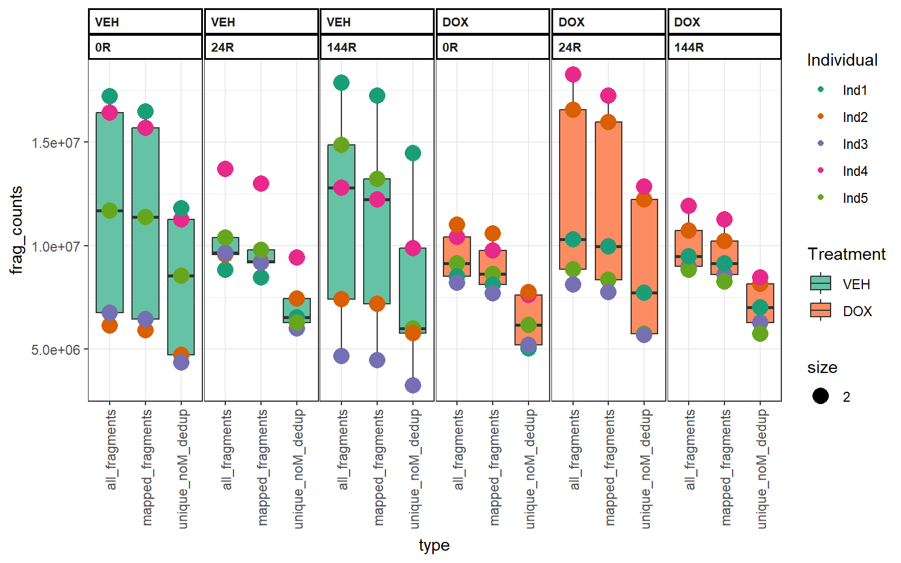
Current Fig 2
Fragment lengths
file_list_filter <- list.files(path="data/bam_no_multi",
pattern ="frag_len_count\\.txt$",full.names = TRUE)
read_and_label <- function(file) {
df <- read_delim(file, delim = "\t", col_names = c("Col1", "Col2")) # Adjust delimiter if needed
df <- df %>%
mutate(File = basename(file), # Add filename column
weight = Col2/sum(Col2))
return(df)
}
combined_df <- map_df(file_list_filter, read_and_label)
annotated_combo_df <- combined_df %>%
mutate(sample = gsub("_frag_len_count.txt","",File)) %>%
left_join(., sampleinfo, by = c("sample"="Library ID"))
annotated_combo_df <- annotated_combo_df[(!annotated_combo_df$Treatment %in% "5FU"),]
annotated_combo_df %>%
mutate(Timepoint=factor(Timepoint, levels = c("24T","24R","144R"),labels = c("0R","24R","144R")),
Treatment=factor(Treatment, levels = c("DOX","VEH"))) %>%
mutate(sample_name=paste0(Individual,"_",Treatment,"_",Timepoint),
trt_time=paste0(Treatment,"_",Timepoint),
trt_time=factor(trt_time, levels = c("DOX_0R","DOX_24R","DOX_144R","VEH_0R","VEH_24R","VEH_144R"))) %>%
arrange( Treatment,Individual, Timepoint) %>%
mutate(sample_name = factor(sample_name, levels = unique(sample_name))) %>%
dplyr::filter(Histone_Mark=="H3K27ac") %>%
ggplot(., aes(x=sample_name, y=Col1, weight = weight,fill = Treatment))+
geom_violin(bw = 5) +
scale_y_continuous(breaks = seq(0, 800, 50)) +
theme_bw(base_size = 15) +
ggpubr::rotate_x_text(angle = 90) +
ggtitle("Fragment lengths for H3K27ac")+
ylab("Fragment Length") +
xlab("")+
scale_fill_brewer(palette="Set2")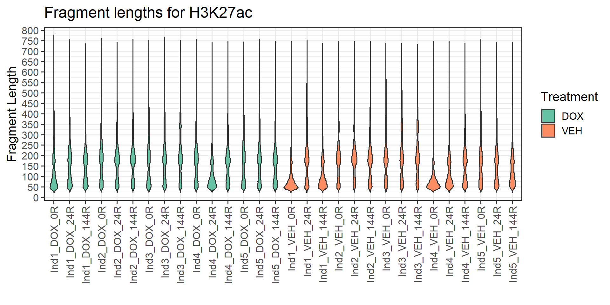
Current Fig 3
Current Fig 4
peak counts
Peak_n_FRIP <- H3K27ac_peaks %>%
left_join(sampleinfo, by =c("Sample"='Library ID')) %>%
mutate(Timepoint=factor(Timepoint, levels = c("24T","24R","144R"),labels = c("0R","24R","144R")),
Treatment=factor(Treatment, levels = c("DOX","VEH"))) %>%
left_join(peak_ct, by=c("Sample"="Sample")) %>%
mutate(sample_name=paste0(Individual,"_",Treatment,"_",Timepoint),
trt_time=paste0(Treatment,"_",Timepoint),
trt_time=factor(trt_time, levels = c("DOX_0R","DOX_24R","DOX_144R","VEH_0R","VEH_24R","VEH_144R")))
ggplot(Peak_n_FRIP, aes(x=trt_time, y = Count))+
geom_boxplot(aes(fill=Treatment, alpha=.8))+
geom_point(aes(color=Individual, size=4))+
labs(title="Count of H3K27ac Peaks")+
ylab("Number of Peaks")+
xlab("Treatment and Time")+
theme_bw()+
scale_color_brewer(palette="Dark2")+
scale_fill_brewer(palette="Set2")
Current Fig 5
FRiP
ggplot(Peak_n_FRIP, aes(x=trt_time, y = FRiP))+
geom_boxplot(aes(fill=Treatment, alpha=.8))+
geom_point(aes(color=Individual, size=4))+
labs(title="Fraction of Reads in Peaks for H3K27ac")+
ylab("Reads in Peaks/ Total Reads")+
xlab("Treatment and Time")+
theme_bw()+
scale_color_brewer(palette="Dark2")+
scale_fill_brewer(palette="Set2")
Current Fig 6
H3K27ac_merged <- read_delim("data/peaks/H3K27ac_FINAL_counts.txt",
delim = "\t", escape_double = FALSE,
trim_ws = TRUE, skip = 1)
rename_list <- sampleinfo %>%
mutate(stem= "_nobl.bam") %>%
mutate(prefix=paste0("/scratch/10819/styu/MW_multiQC/peaks/",Histone_Mark,"/",Treatment,"/",Timepoint,"/")) %>%
mutate(oldname=paste0(prefix,`Library ID`,"/",`Library ID`,stem)) %>%
mutate(newname=paste0(Individual,"_",Treatment,"_",Timepoint)) %>%
dplyr::select(oldname,newname)
rename_vec <- setNames(rename_list$newname, rename_list$oldname)
names(H3K27ac_merged)[names(H3K27ac_merged) %in% names(rename_vec)] <- rename_vec[names(H3K27ac_merged)[names(H3K27ac_merged) %in% names(rename_vec)]]
H3K27ac_merged_raw <- H3K27ac_merged %>%
dplyr::select(Geneid,contains("Ind")) %>%
column_to_rownames("Geneid") %>%
as.matrix()
H3K27ac_merged_lcpm <- H3K27ac_merged %>%
dplyr::select(Geneid,contains("Ind")) %>%
column_to_rownames("Geneid") %>%
cpm(., log = TRUE)
H3K27ac_merged_raw <- H3K27ac_merged_raw[rowMeans(H3K27ac_merged_lcpm)>0,]
H3K27ac_merged_raw <- H3K27ac_merged_raw[!grepl("chrY",rownames(H3K27ac_merged_raw)),]
H3K27ac_merged_raw <- H3K27ac_merged_raw[!grepl("chrX",rownames(H3K27ac_merged_raw)),]
H3K27ac_annomat <- data.frame(timeset=colnames(H3K27ac_merged_raw)) %>%
mutate(sample=timeset) %>%
separate(timeset, into = c("ind","tx","time")) %>%
mutate(tx=factor(tx, levels = c("VEH", "DOX")),
time=factor(time, levels =c("24T","24R","144R"))) %>%
mutate(ind = gsub("Ind", "", ind)) %>%
mutate(txtime = paste0(tx, "_", time)) %>%
mutate(group = txtime)
H3K27ac_annomat$group <- H3K27ac_annomat$group %>%
gsub("DOX_24T", "1", .) %>%
gsub("DOX_24R", "2", .) %>%
gsub("DOX_144R", "3", .) %>%
gsub("VEH_24T", "4", .) %>%
gsub("VEH_24R", "5", .) %>%
gsub("VEH_144R", "6", .)
dge_H3K27ac <- edgeR::DGEList(counts = H3K27ac_merged_raw, group = H3K27ac_annomat$group, genes = row.names(H3K27ac_merged_raw))
lcpm_dge_H3K27ac <- cpm(dge_H3K27ac, log = TRUE)get_regr_pval <- function(mod) {
# Returns the p-value for the Fstatistic of a linear model
# mod: class lm
stopifnot(class(mod) == "lm")
fstat <- summary(mod)$fstatistic
pval <- 1 - pf(fstat[1], fstat[2], fstat[3])
return(pval)
}
plot_versus_pc <- function(df, pc_num, fac) {
# df: data.frame
# pc_num: numeric, specific PC for plotting
# fac: column name of df for plotting against PC
pc_char <- paste0("PC", pc_num)
# Calculate F-statistic p-value for linear model
pval <- get_regr_pval(lm(df[[ pc_char]] ~ df[[ fac]]))
# Pick palette based on factor
pal <- dplyr::case_when(
fac == "ind" ~ "Dark2",
fac == "tx" ~ "Set2",
TRUE ~ NA_character_)
if (is.numeric(df[[fac]])) {
p <- ggplot(df, aes(x=.data[[fac]], y= .data[[pc_char]]))+
geom_point() +
geom_smooth(method = "lm") +
theme_bw()+
labs(title = sprintf("p-val: %.2f", pval))
} else {
p <- ggplot(df, aes(x = .data[[fac]], y = .data[[pc_char]], fill = .data[[fac]])) +
geom_boxplot() +
theme_bw()+
labs(title = sprintf("p-val: %.3f", pval))
if (!is.na(pal)) {
p <- p + scale_fill_brewer(palette = pal)
}
}
p
}H3K27ac_pr <- prcomp(t(lcpm_dge_H3K27ac))
H3K27ac_pr_anno <- H3K27ac_pr$x %>%
as.data.frame() %>%
rownames_to_column("sample") %>%
separate(sample, into = c("ind","tx","time")) %>%
mutate(tx=factor(tx, levels = c("VEH", "DOX")),
time=factor(time, levels =c("24T","24R","144R"))) %>%
mutate(txtime = paste0(tx, "_", time)) %>%
mutate(sex=if_else(ind %in% c("Ind1","Ind2"),"F","M"))%>%
mutate(sex=factor(sex, levels=c("F","M")))
facs <- c("ind", "tx", "time", "sex")
names(facs) <- c("Individual", "Treatment", "Time","Sex")
plots_H3K27ac <- lapply(names(facs), function(f_label) {
f <- facs[f_label]
f_v_pc1 <- plot_versus_pc(H3K27ac_pr_anno, 1, f)
f_v_pc2 <- plot_versus_pc(H3K27ac_pr_anno, 2, f)
f_v_pc3 <- plot_versus_pc(H3K27ac_pr_anno, 3, f)
f_v_pc4 <- plot_versus_pc(H3K27ac_pr_anno, 4, f)
gridExtra::grid.arrange(f_v_pc1, f_v_pc2, f_v_pc3,f_v_pc4, ncol = 2, top = paste0(f_label," H3K27ac"))
})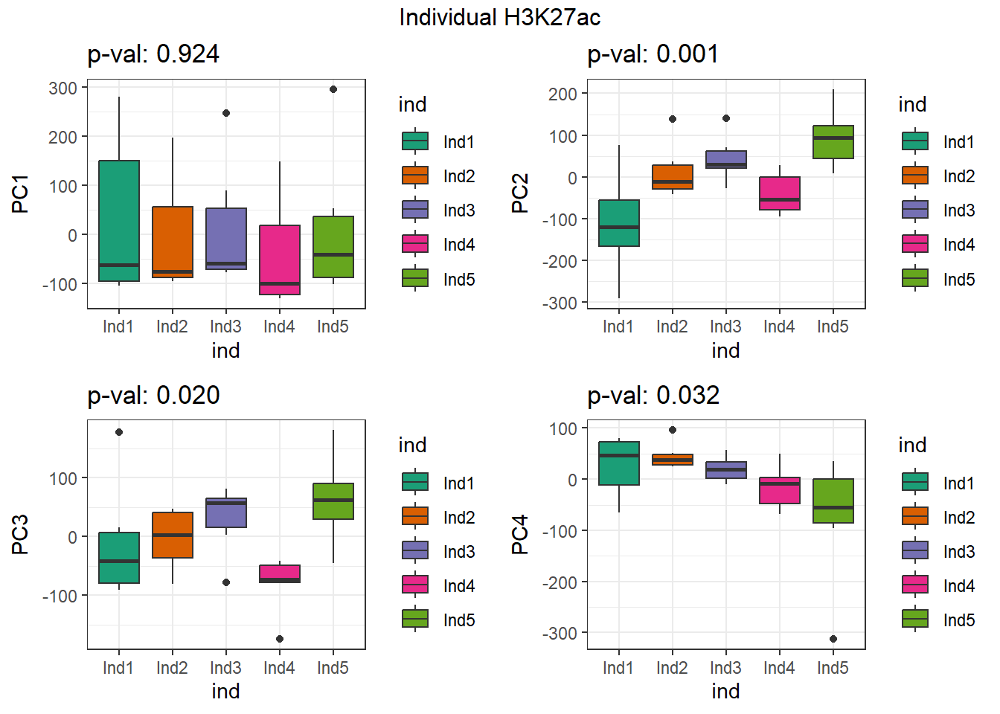
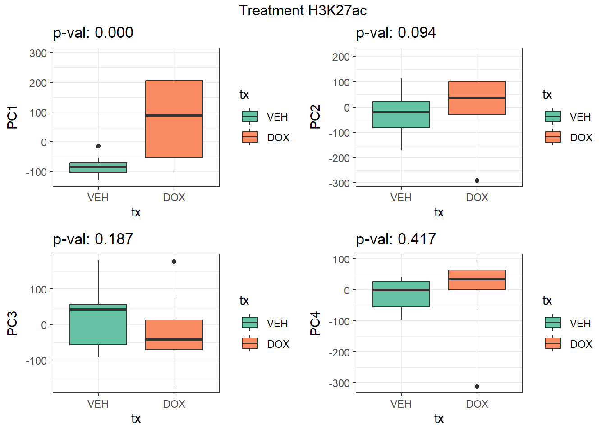
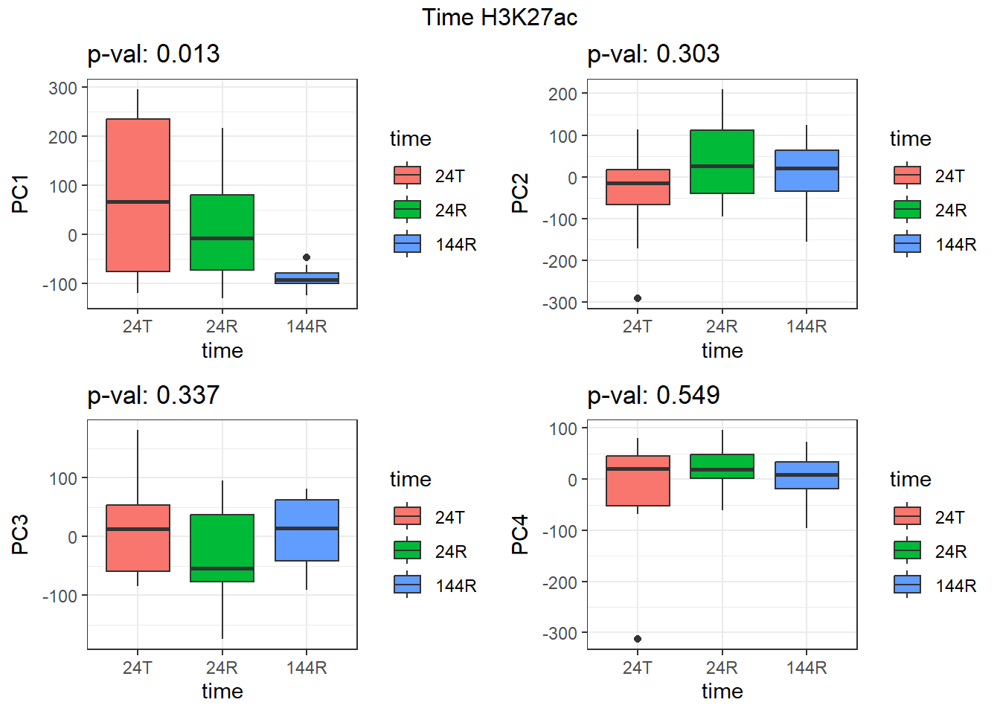
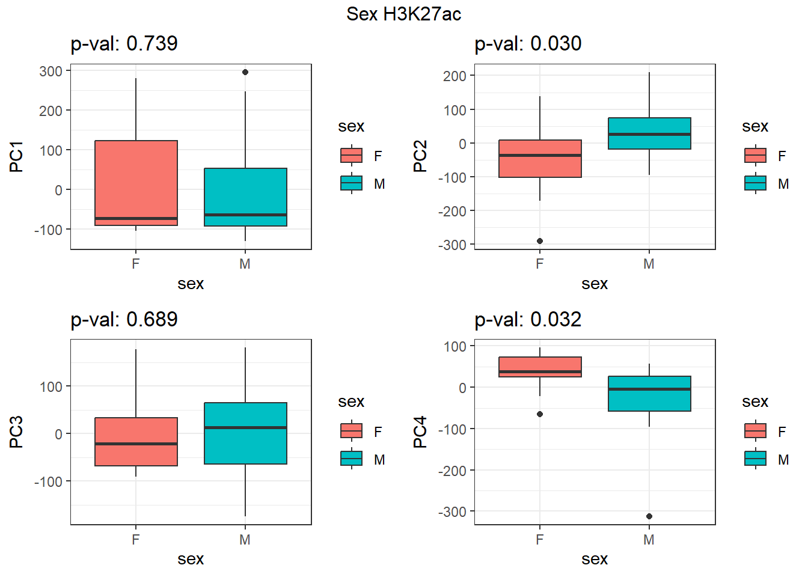
Current Fig 7
heatmap of log2cpm
H3K27ac_merged_cor <- H3K27ac_merged_lcpm %>%
cor()
annomat <- data.frame(sample=colnames(H3K27ac_merged_cor)) %>%
separate_wider_delim(sample,delim="_",names=c("Ind","Treatment","Timepoint"),cols_remove = FALSE) %>%
mutate(Treatment=factor(Treatment, levels = c("VEH","DOX")),
Timepoint=factor(Timepoint, levels =c("24T","24R","144R")),
Ind=factor(Ind, levels=c("Ind1","Ind2","Ind3","Ind4","Ind5"))) %>%
column_to_rownames("sample")
dark2_cols <- brewer.pal(8, "Dark2")
set2_cols <- brewer.pal(8, "Set2")
ind_cols <- setNames(
dark2_cols[seq_along(levels(annomat$Ind))],
levels(annomat$Ind))
treatment_cols <- setNames(
set2_cols[c(1, 2)],
levels(annomat$Treatment))
timepoint_cols <- setNames(
set2_cols[c(4, 5, 6)],
levels(annomat$Timepoint))
heatmap_first <- ComplexHeatmap::HeatmapAnnotation(
df = annomat,
col = list(
Ind = ind_cols,
Treatment = treatment_cols,
Timepoint = timepoint_cols))
Heatmap(
H3K27ac_merged_cor,
top_annotation = heatmap_first,
column_title = "Filtered log2cpm H3K27ac"
)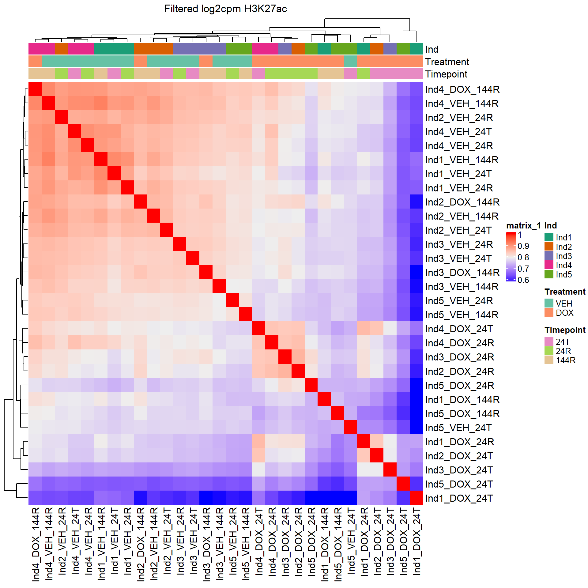
Current Fig 8
volcano plots, venn, and proportions
A:
H3K27ac_toptable_list <- bind_rows(H3K27ac_toplist, .id = "group")
H3K27ac_0R <- volcanosig(H3K27ac_toplist$H3K27ac_24T, 0.05)+ ggtitle("DOX 0R")
H3K27ac_24R <- volcanosig(H3K27ac_toplist$H3K27ac_24R, 0.05)+ ggtitle("DOX 24R")+ylab("")
H3K27ac_144R <- volcanosig(H3K27ac_toplist$H3K27ac_144R, 0.05)+ ggtitle("DOX 144R")+ylab("")
cowplot::plot_grid(H3K27ac_0R, H3K27ac_24R, H3K27ac_144R, rel_widths =c(1,1,1))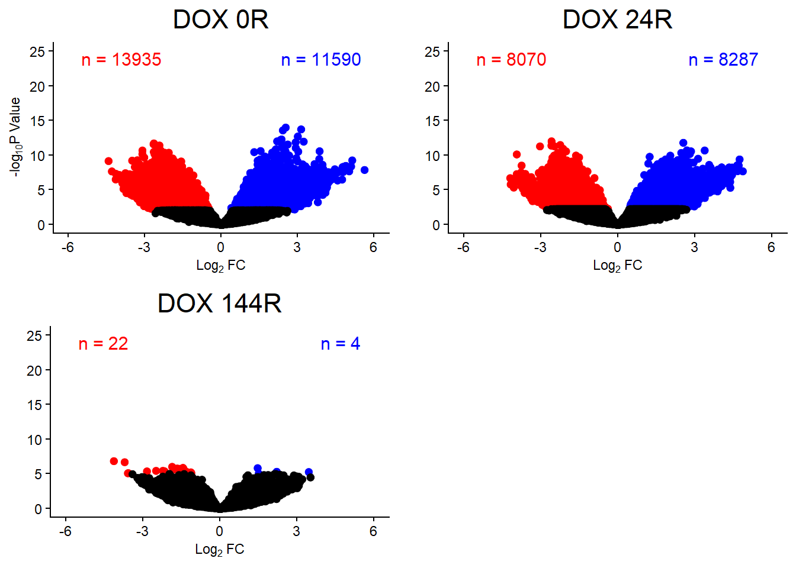
venn diagram
DOX_0R <- H3K27ac_toplist$H3K27ac_24T
DOX_0R <- DOX_0R %>% dplyr::filter(adj.P.Val<0.05)
DOX_24R <- H3K27ac_toplist$H3K27ac_24R
DOX_24R <- DOX_24R %>% dplyr::filter(adj.P.Val<0.05)
DOX_144R <- H3K27ac_toplist$H3K27ac_144R
DOX_144R <- DOX_144R %>% dplyr::filter(adj.P.Val<0.05)
ggVennDiagram(list("DOX_0R"=DOX_0R$genes,
"DOX_24R"=DOX_24R$genes,
"DOX_144R"=DOX_144R$genes),
label="count",
set_color = c("DOX_0R"=timepoint_cols["24T"],
"DOX_24R" =timepoint_cols["24R"],
"DOX_144R" = timepoint_cols["144R"]))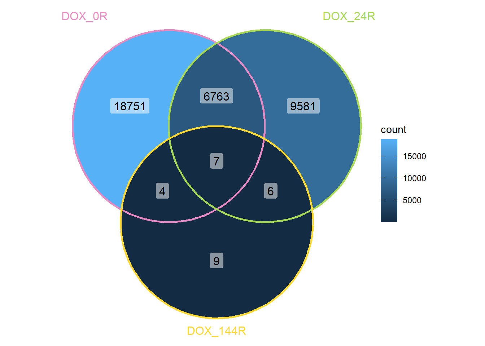
H3K27ac_toptable_list %>%
dplyr::select(group,genes,logFC,adj.P.Val) %>%
mutate(sig_val=if_else(adj.P.Val<0.05,"sig","not_sig")) %>%
mutate(
sig_val = factor(sig_val, levels = c("not_sig", "sig")),
group = factor(group, levels = c("H3K27ac_24T","H3K27ac_24R","H3K27ac_144R"))) %>%
ggplot(aes(x = group, fill = sig_val)) +
geom_bar(position = "fill") +
theme_bw() +
ggtitle("H3K27ac") +
ylab("Proportion") +
scale_y_continuous(labels = scales::percent)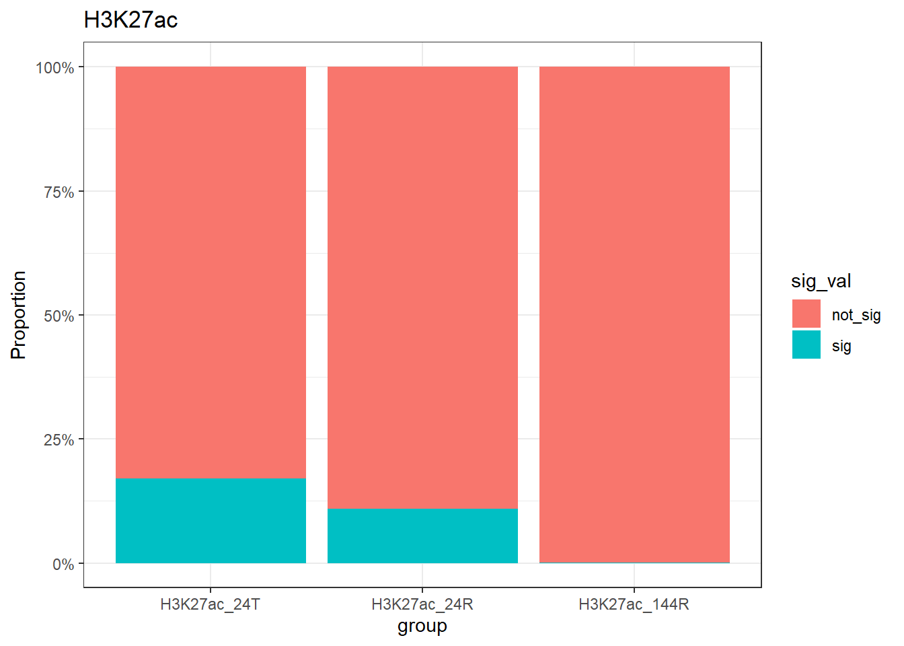
Current Fig 9
cormotif_H3K27ac <- readRDS("data/Cormotif_data/Cormotif_initial_H3K27ac.RDS")
plotIC(cormotif_H3K27ac)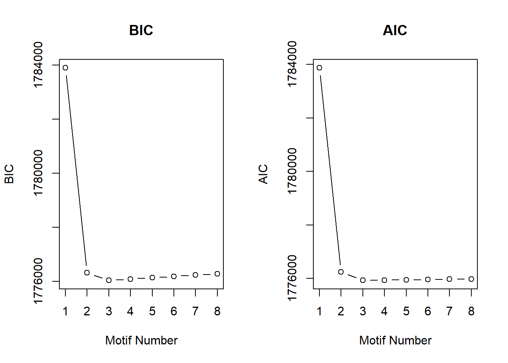
plotMotif(cormotif_H3K27ac)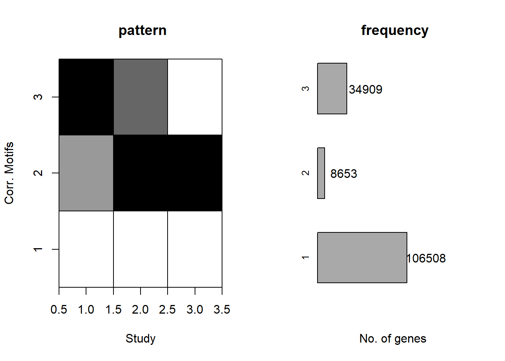
grey_vals <- seq(from = 1, to = 0, by = -0.1)
legend_df <- data.frame(
motif.q = factor(seq(0, 1, by = 0.1)),
x = 1,
y = seq(0, 1, by = 0.1)
)
p <- ggplot(legend_df, aes(x = x, y = y, fill = motif.q)) +
geom_tile() +
scale_fill_manual(values = gray(grey_vals),
name = "Probability") +
theme_void() +
theme(legend.position = "right")
legend_only <- cowplot::get_legend(p)
cowplot::plot_grid(legend_only)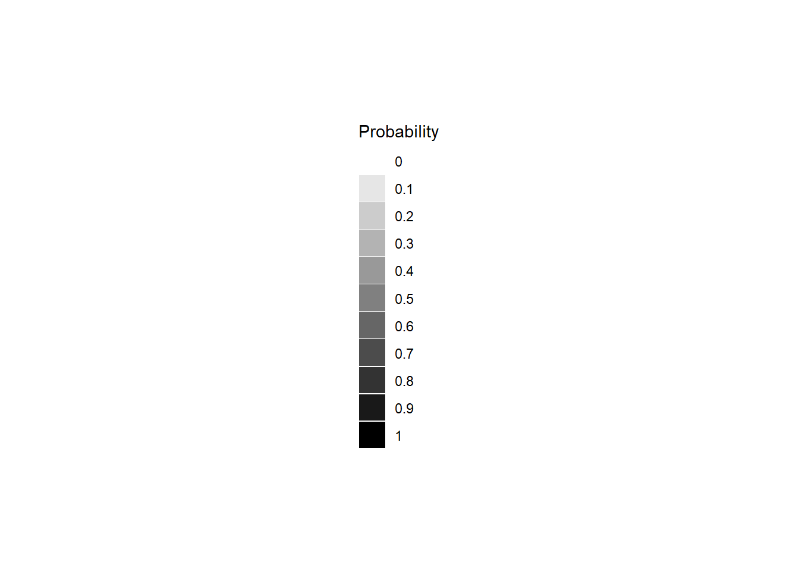
proportion plot
all_H3K27ac_regions <- peakAnnoList_H3K27ac$all_H3K27ac %>% as.data.frame() %>% dplyr::select(Peakid)
all_H3K27ac_regions %>%
mutate(group="H3K27ac") %>%
left_join(., H3K27ac_lookup) %>%
tidyr::replace_na(list(cluster = "NA")) %>%
ggplot(., aes(y=group,fill=cluster))+
geom_bar()+
geom_text(aes( label = scales::percent(..prop..),
x= ..prop.. ), stat= "count", vjust = -.5)+
ggtitle("H3K27ac proportions of ROIs")+
theme_classic()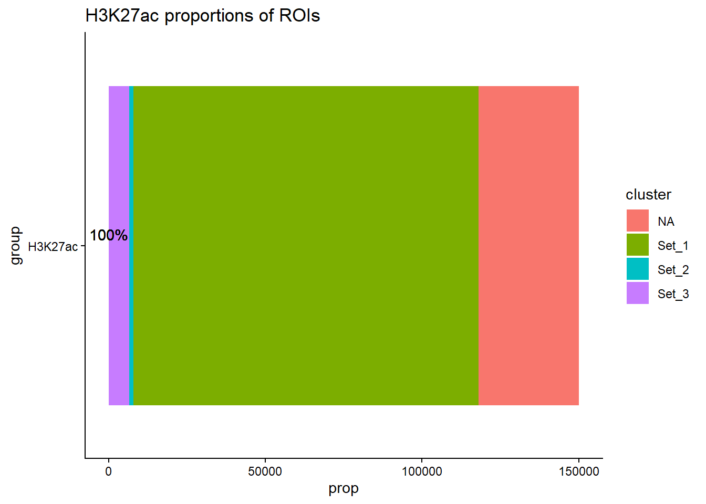
examp_H3K27ac_1 <-
c("chr1:77923740-77924468","chr20:25484622-25485357","chr1:229148017-229149226")
examp_H3K27ac_2 <-
c("chr5:85451856-85453893","chr10:114271262-114272616", "chr3:63343167-63344341" )
examp_H3K27ac_3 <-
c("chr8:8664034-8666371","chr3:141152796-141154087","chr21:43701994-43704465")plot_example_lcpm <- function(examples, set){
df <- lcpm_dge_H3K27ac %>%
as.data.frame() %>%
dplyr::filter(row.names(lcpm_dge_H3K27ac) %in% examples) %>%
rownames_to_column("Peakid") %>%
pivot_longer(., cols = !Peakid, names_to = "sample", values_to = "lcpm" ) %>%
separate_wider_delim(., cols=sample, delim="_", names=c("ind","tx","time")) %>%
mutate(ind=factor(ind, levels=c("Ind1", "Ind2", "Ind3", "Ind4","Ind5")),
tx=factor(tx,levels = c("VEH","DOX")),
time=factor(time, levels=c("24T","24R","144R"), labels=c("0R","24R","144R")),
group_graph= paste0(tx, "_", time),
group=paste0("H3K27ac_",time),
group_graph = factor(group_graph, levels = c( "VEH_0R", "VEH_24R","VEH_144R", "DOX_0R","DOX_24R","DOX_144R")))
geneplot <- ggplot(df, aes(x=group_graph, y=lcpm)) +
geom_boxplot(aes(fill=tx))+
facet_wrap(~Peakid, scales="free")+
theme_bw()+
theme(axis.text.x=element_text(angle = 90))+
ggtitle(paste0(set," H3K27ac samples"))+
scale_fill_brewer(palette="Set2")
plot(geneplot)
}plot_example_lcpm(examp_H3K27ac_1,"Set 1")
plot_example_lcpm(examp_H3K27ac_2,"Set 2")
plot_example_lcpm(examp_H3K27ac_3,"Set 3")
Current Fig 10
categories <- c(
"Distal Intergenic", "Downstream (<=300)",
"Other Intron", "1st Intron",
"Other Exon", "1st Exon",
"3' UTR", "5' UTR",
"Promoter (1-2kb)", "Promoter (<=1kb)"
)
# Optional: custom color palette
color_pal <- c(
"#6a3d9a", "#cab2d6",
"#ff7f00", "#fdbf6f",
"#e31a1c", "#fb9a99",
"#33a02c", "#b2df8a",
"#1f78b4", "#a6cee3"
)
names(color_pal) <- categories
res <- standardizeAnnoList(peakAnnoList_H3K27ac, categories, color_pal)
peakAnnoList_H3K27ac_std <- res$annoList
color_pal_std <- res$color_pal
# bar plot
plotAnnoBar(peakAnnoList_H3K27ac_std[c(4,1,2,3)]) +
scale_fill_manual(values=color_pal_std) +
ggtitle("H3K27ac Feature Distribution")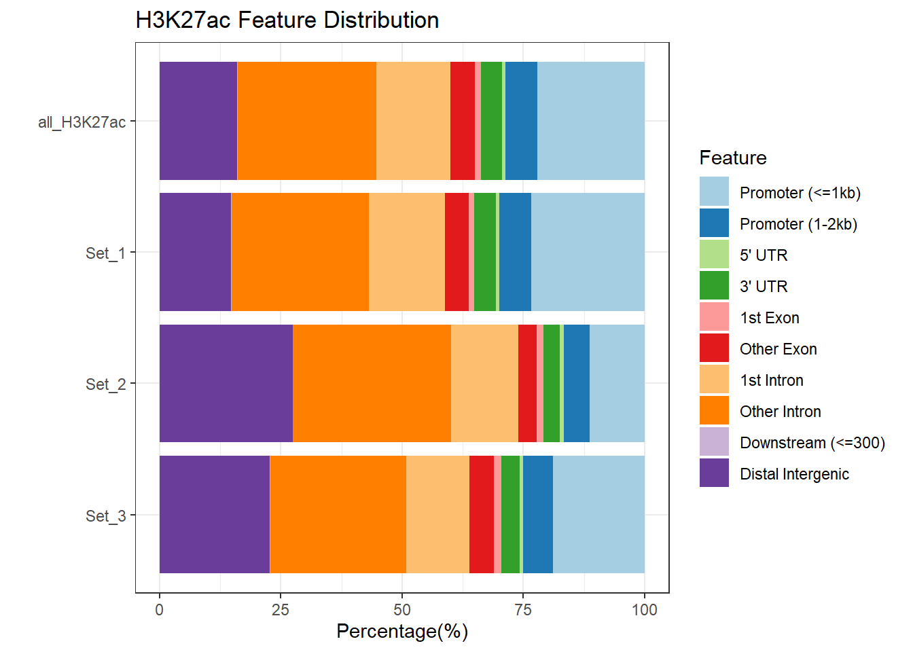
H3K27ac_cre_df <- readRDS("data/RDS_files/H3K27ac_cre_df.RDS")
scale_fill_cCREs <- function(...){
ggplot2:::manual_scale(
'fill',
values = setNames(c( "#E64B35FF", "#4DBBD5FF", "#00A087FF" ,"#3C5488FF", "#F39B7FFF", "#8491B4FF", "#91D1C2FF", "#DC0000FF", "#7E6148FF", "#B09C85FF","#008B45FF", "#631879FF", "#5F559BFF", "#A20056FF", "#808180FF", "#1B1919FF"), c(unique(H3K27ac_cre_df$cCRE_class),"NA","CA-only","Low-DNase")),
...
)
}
H3K27ac_cre_counts <- readRDS("data/RDS_files/H3K27ac_cre_hg38_counts.RDS")
ggplot(H3K27ac_cre_counts, aes(x = cluster, y = percent, fill = cCRE_class)) +
geom_col() +
scale_y_continuous(labels = scales::percent) +
labs(
y = "Proportion of ROIs",
x = "Set",
fill = "cCRE class"
) +
theme_bw()+
ggtitle("H3K27ac ROI summits crossing :hg38 all cCREs ")+scale_fill_cCREs()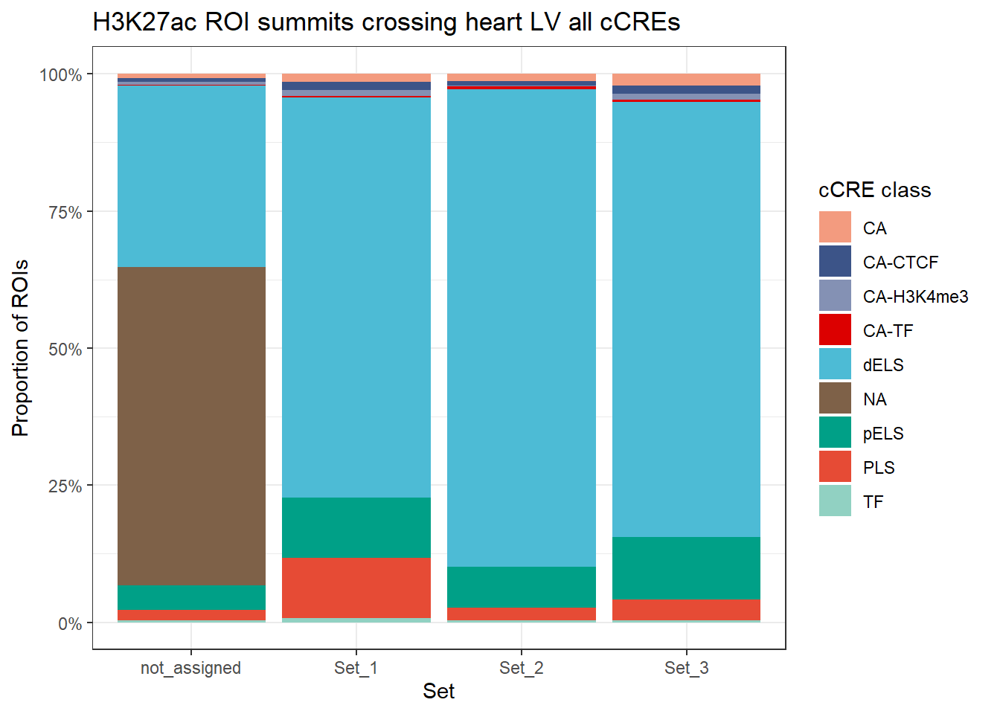
sessionInfo()R version 4.4.2 (2024-10-31 ucrt)
Platform: x86_64-w64-mingw32/x64
Running under: Windows 11 x64 (build 26200)
Matrix products: default
locale:
[1] LC_COLLATE=English_United States.utf8
[2] LC_CTYPE=English_United States.utf8
[3] LC_MONETARY=English_United States.utf8
[4] LC_NUMERIC=C
[5] LC_TIME=English_United States.utf8
time zone: America/Chicago
tzcode source: internal
attached base packages:
[1] grid stats4 stats graphics grDevices utils datasets
[8] methods base
other attached packages:
[1] ChIPseeker_1.42.1 ggVennDiagram_1.5.7 RColorBrewer_1.1-3
[4] edgeR_4.4.2 limma_3.62.2 org.Hs.eg.db_3.20.0
[7] AnnotationDbi_1.68.0 Biobase_2.66.0 ggalluvial_0.12.6
[10] circlize_0.4.18 ComplexHeatmap_2.22.0 DT_0.34.0
[13] ggrepel_0.9.8 rtracklayer_1.66.0 genomation_1.38.0
[16] plyranges_1.26.0 GenomicRanges_1.58.0 GenomeInfoDb_1.42.3
[19] IRanges_2.40.1 S4Vectors_0.44.0 BiocGenerics_0.52.0
[22] lubridate_1.9.5 forcats_1.0.1 stringr_1.6.0
[25] dplyr_1.2.1 purrr_1.2.2 readr_2.2.0
[28] tidyr_1.3.2 tibble_3.3.1 ggplot2_4.0.3
[31] tidyverse_2.0.0 workflowr_1.7.2
loaded via a namespace (and not attached):
[1] splines_4.4.2
[2] later_1.4.8
[3] BiocIO_1.16.0
[4] bitops_1.0-9
[5] ggplotify_0.1.3
[6] R.oo_1.27.1
[7] XML_3.99-0.23
[8] lifecycle_1.0.5
[9] rstatix_0.7.3
[10] doParallel_1.0.17
[11] rprojroot_2.1.1
[12] vroom_1.7.1
[13] processx_3.9.0
[14] lattice_0.22-9
[15] backports_1.5.1
[16] magrittr_2.0.5
[17] sass_0.4.10
[18] rmarkdown_2.31
[19] jquerylib_0.1.4
[20] yaml_2.3.12
[21] plotrix_3.8-14
[22] httpuv_1.6.17
[23] otel_0.2.0
[24] ggtangle_0.1.2
[25] cowplot_1.2.0
[26] DBI_1.3.0
[27] abind_1.4-8
[28] zlibbioc_1.52.0
[29] R.utils_2.13.0
[30] RCurl_1.98-1.18
[31] yulab.utils_0.2.4
[32] rappdirs_0.3.4
[33] git2r_0.36.2
[34] GenomeInfoDbData_1.2.13
[35] enrichplot_1.26.6
[36] tidytree_0.4.7
[37] codetools_0.2-20
[38] DelayedArray_0.32.0
[39] DOSE_4.0.1
[40] tidyselect_1.2.1
[41] shape_1.4.6.1
[42] aplot_0.2.9
[43] UCSC.utils_1.2.0
[44] farver_2.1.2
[45] matrixStats_1.5.0
[46] GenomicAlignments_1.42.0
[47] jsonlite_2.0.0
[48] GetoptLong_1.1.1
[49] Formula_1.2-5
[50] iterators_1.0.14
[51] foreach_1.5.2
[52] tools_4.4.2
[53] treeio_1.30.0
[54] TxDb.Hsapiens.UCSC.hg19.knownGene_3.2.2
[55] Rcpp_1.1.1-1.1
[56] glue_1.8.1
[57] gridExtra_2.3
[58] SparseArray_1.6.2
[59] xfun_0.57
[60] qvalue_2.38.0
[61] MatrixGenerics_1.18.1
[62] withr_3.0.2
[63] fastmap_1.2.0
[64] boot_1.3-32
[65] caTools_1.18.3
[66] callr_3.7.6
[67] digest_0.6.39
[68] timechange_0.4.0
[69] R6_2.6.1
[70] gridGraphics_0.5-1
[71] seqPattern_1.38.0
[72] colorspace_2.1-2
[73] Cairo_1.7-0
[74] GO.db_3.20.0
[75] gtools_3.9.5
[76] dichromat_2.0-0.1
[77] RSQLite_3.52.0
[78] R.methodsS3_1.8.2
[79] generics_0.1.4
[80] data.table_1.18.4
[81] httr_1.4.8
[82] htmlwidgets_1.6.4
[83] S4Arrays_1.6.0
[84] whisker_0.4.1
[85] pkgconfig_2.0.3
[86] gtable_0.3.6
[87] blob_1.3.0
[88] S7_0.2.2
[89] impute_1.80.0
[90] XVector_0.46.0
[91] htmltools_0.5.9
[92] carData_3.0-6
[93] fgsea_1.32.4
[94] clue_0.3-68
[95] scales_1.4.0
[96] png_0.1-9
[97] ggfun_0.2.0
[98] knitr_1.51
[99] rstudioapi_0.18.0
[100] tzdb_0.5.0
[101] reshape2_1.4.5
[102] rjson_0.2.23
[103] nlme_3.1-169
[104] curl_7.1.0
[105] cachem_1.1.0
[106] GlobalOptions_0.1.4
[107] KernSmooth_2.23-26
[108] vipor_0.4.7
[109] parallel_4.4.2
[110] ggrastr_1.0.2
[111] restfulr_0.0.16
[112] pillar_1.11.1
[113] vctrs_0.7.3
[114] gplots_3.3.0
[115] ggpubr_0.6.3
[116] promises_1.5.0
[117] car_3.1-5
[118] cluster_2.1.8.2
[119] beeswarm_0.4.0
[120] evaluate_1.0.5
[121] magick_2.9.1
[122] GenomicFeatures_1.58.0
[123] cli_3.6.6
[124] locfit_1.5-9.12
[125] compiler_4.4.2
[126] Rsamtools_2.22.0
[127] rlang_1.2.0
[128] crayon_1.5.3
[129] ggsignif_0.6.4
[130] labeling_0.4.3
[131] ggbeeswarm_0.7.3
[132] getPass_0.2-4
[133] plyr_1.8.9
[134] fs_2.1.0
[135] stringi_1.8.7
[136] gridBase_0.4-7
[137] BiocParallel_1.40.2
[138] Biostrings_2.74.1
[139] lazyeval_0.2.3
[140] GOSemSim_2.32.0
[141] Matrix_1.7-5
[142] BSgenome_1.74.0
[143] hms_1.1.4
[144] patchwork_1.3.2
[145] bit64_4.8.0
[146] KEGGREST_1.46.0
[147] statmod_1.5.1
[148] SummarizedExperiment_1.36.0
[149] broom_1.0.12
[150] igraph_2.3.1
[151] memoise_2.0.1
[152] bslib_0.10.0
[153] ggtree_3.14.0
[154] fastmatch_1.1-8
[155] bit_4.6.0
[156] ape_5.8-1